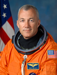

Lyndon B. Johnson Space Center
Houston, Texas 77058
|
National Aeronautics and Space Administration Lyndon B. Johnson Space Center Houston, Texas 77058 |
 |
Biographical Data |
||
Terrence W. Wilcutt (Colonel, USMC)
DIRECTOR, SAFETY & MISSION ASSURANCE, JOHNSON SPACE CENTER
PERSONAL DATA: Born October 31, 1949, in Russellville, Kentucky. He enjoys flying, reading, running, and woodworking.
EDUCATION: Graduated from Southern High School, Louisville, Kentucky in 1967; received a Bachelor of Arts degree in math from Western Kentucky University in 1974. Graduate of US Naval Test Pilot School in 1986.
ORGANIZATIONS:
SPECIAL HONORS:
EXPERIENCE: After graduation from college in 1974, Wilcutt taught high school math for two years prior to entering the Marine Corps. He was commissioned in 1976 and earned his wings in 1978. Following initial F-4 Phantom training in VMFAT-101, he reported to VMFA-235, Kaneohe, Hawaii. While assigned to VMFA-235, Wilcutt attended the Naval Fighter Weapons School (Topgun) and made two overseas deployments to Japan, Korea, and the Philippines. In 1983, he was selected for F/A-18 conversion training and served as an F/A-18 Fighter Weapons and Air Combat Maneuvering Instructor in VFA-125, Lemoore, California. In 1986, Wilcutt was selected to attend the United States Naval Test Pilot School (USNTPS). Following graduation from USNTPS he was assigned as a test pilot/project officer for Strike Aircraft Test Directorate (SATD) at the Naval Aircraft Test Center, Patuxent River, Maryland. While assigned to SATD, Wilcutt flew the F/A-18 Hornet, the A-7 Corsair II, the F-4 Phantom, and various other aircraft while serving as a test pilot/project officer in a wide variety of projects and classified programs. He has over 6,600 flight hours in more than 30 different aircraft.
NASA EXPERIENCE: Selected by NASA in January 1990, Wilcutt became an astronaut in July 1991. Technical assignments to date include: work on Space Shuttle Main Engine and External Tank issues; Astronaut Support Personnel team at the Kennedy Space Center, Florida, supporting Space Shuttle launches and landings; technical issues for the Astronaut Office Operations Development Branch; NASA Director of Operations at the Yuri Gagarin Cosmonaut Training Center, Star City, Russia; Chief of the Astronaut Office Shuttle Operations Branch; Manager, Safety & Mission Assurance, Space Shuttle Program. He was the pilot on STS-68 in 1994 and STS-79 in 1996, and was the mission commander on STS-89 in 1998 and STS-106 in 2000. A veteran of four space flights, Wilcutt has logged over 1,007 hours in space. Wilcutt currently serves as Director, Safety and Mission Assurance Directorate, Johnson Space Center.
SPACE FLIGHT EXPERIENCE: STS-68 Endeavour (September 30 to October 11, 1994) was part of NASA’s Mission to Planet Earth. STS-68, Space Radar Lab-2 (SRL-2), was the second flight of three advanced radars called SIR-C/X-SAR (Spaceborne Imaging Radar-C/X-Band Synthetic Aperture Radar), and a carbon-monoxide pollution sensor, MAPS (Measurement of Air Pollution from Satellites). SIR-C/X-SAR and MAPS operated together in Endeavour’s cargo bay to study Earth’s surface and atmosphere, creating radar images of Earth’s surface environment and mapping global production and transport of carbon monoxide pollution. Real-time crew observations of environmental conditions, along with over 14,000 photographs aided the science team in interpreting the SRL data. The SRL-2 mission was a highly successful test of technology intended for long-term environmental and geological monitoring of planet Earth. STS-68 launched from Kennedy Space Center, Florida, and landed at Edwards Air Force Base, California. Mission duration was 11 days, 5 hours, 46 minutes, traveling 4.7 million miles in 183 orbits of the Earth.
STS-79 Atlantis (September 16-26, 1996), the fourth in the joint American-Russian Shuttle-Mir series of missions, launched from and returned to land at Kennedy Space Center, Florida. STS-79 rendezvoused with the Russian Mir space station and ferried supplies, personnel, and scientific equipment to this base 240 miles above the Earth. The crew transferred over 3.5 tons of supplies to and from the Mir and exchanged U.S. astronauts on Mir for the first time - leaving John Blaha and bringing Shannon Lucid home after her record six months stay aboard Mir. Mission duration was 10 days, 3 hours, 18 minutes, traveling 3.9 million miles in 159 orbits of the Earth.
STS-89 (January 22-31, 1998) was the eighth Shuttle-Mir docking mission during which the crew transferred more than 9,000 pounds of scientific equipment, logistical hardware and water from Space Shuttle Endeavour to Mir. In the fifth and last exchange of a U.S. astronaut, STS-89 delivered Andy Thomas to Mir and returned with David Wolf. Mission duration was 8 days, 19 hours and 47 seconds, traveling 3.6 million miles in 138 orbits of the Earth.
STS-106 Atlantis (September 8-20, 2000) was a 12-day mission during which the crew successfully prepared the International Space Station for the arrival of the first permanent crew. The five astronauts and two cosmonauts delivered more than 6,600 pounds of supplies and installed batteries, power converters, life support, and exercise equipment on the Space Station. Two crew members performed a space walk in order to connect power, data and communications cables to the newly arrived Zvezda Service Module and the Space Station. STS-106 orbited the Earth 185 times, and covered 4.9 million miles in 11 days, 19 hours, and 10 minutes.
MARCH 2010